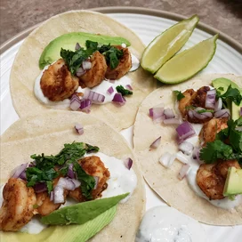

Tacos

Fresh and quick shrimp tacos that are perfect for any day!
How to describe tacos: a Mexican food that consists of a folded and usually fried piece of thin bread (called a tortilla) that is filled with meat, cheese, lettuce, etc. This is a recipe for shrimp tacos, enjoy!
Ingredients
- 2 pounds large frozen peeled and deveined shrimp, thawed
- 1 ½ teaspoons chili powder
- 1 teaspoon freshly minced garlic
- ½ teaspoon paprika
- ½ teaspoon ground cumin
- ½ teaspoon onion powder
- ½ teaspoon salt
- ½ teaspoon ground black pepper
- ¼ teaspoon ground coriander
- 20 (6 inch) corn tortillas
- 2 avocados, thinly sliced, or to taste
- 1 red onion, finely diced, or to taste
Steps
- Rinse defrosted shrimp under cold water, drain, and pat dry.
- Combine shrimp, chili powder, garlic, paprika, cumin, onion powder, 1/2 teaspoon salt, 1/2 teaspoon black pepper, coriander, and orange zest in a bowl. Mix well.
- Heat olive oil in nonstick frying pan over medium-high heat. Add shrimp and cook until bright pink on the outside and the meat is opaque, 4 to 5 minutes on each side, depending on the size of the shrimp.
- While shrimp cooks, prepare crema by whisking together sour cream, zest and juice of 1 lime, 1 teaspoon cilantro, garlic powder, and 1 pinch each of salt and black pepper.
- Heat corn tortillas in either a pan or on a griddle over low heat, 1 to 2 minutes per side. Be careful not to let them burn. Set aside.
- Assemble tacos by spreading 1 teaspoon crema across each tortilla, adding 3 or 4 shrimp, 2 slices of avocado, a sprinkle of fresh red onion, cilantro, and jalapeno. Serve with sliced limes to squeeze on top and extra crema on the side.